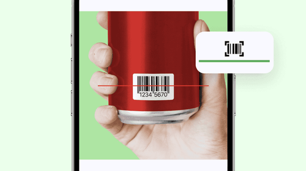

用 FatSecret app 从零开始记饮食：第一天就上手的完整流程
手把手带你用 FatSecret app 开启饮食追踪——从注册填数据算出每日卡路里目标，到搜索、扫码、自定义三管齐下录食物，再到看懂每日数据调整节奏，三步走完新人最容易卡住的地方。
读完这篇教程，你会从零把 FatSecret app 装起来、算准自己的每日卡路里目标、把第一顿饭完整录入日记，并且知道数据不准时该怎么调。
准备工作
FatSecret app官网 有 iOS 和 Android 两个版本，界面布局几乎一样，下面的路径两个平台通用。免费版就能完成日常饮食记录的全部核心功能，Premium 是进阶升级（饮水追踪、智能扫码、自定义餐段这些），先跑通免费版再考虑要不要升级。
动手前确保两件事：体重秤（最近一次的准确体重）和一个安静的十分钟——注册时要填身高、体重、年龄、活动等级这几项，每一项都影响后续给你算出来的卡路里目标。
第一步：注册并算出你的每日目标
安装包从官方下载拿，装好打开应用，选 Sign Up 创建账户，跟着引导把以下信息如实填完：
- 身高、体重、年龄、性别：这四项是算基础代谢率的底，错了后面所有数据都偏
- 活动等级：系统给四个选项，别选高了。久坐办公室就老实选 Sedentary，一周三次慢跑选 Lightly Active 就行。选高了系统给你的每日目标就宽松，减重速度跟不上
- 减重速度目标：默认是温和速度（每周 0.25~0.5 公斤），保持默认就好，激进速度容易饿肚子坚持不住
填完提交，应用会跳转到 Dashboard，顶部显眼位置显示一个数字——这就是你的 RDI（推荐每日摄入），也就是今天全天能吃的卡路里上限。
这里有个小伏笔：RDI 不是一成不变的。体重掉了五公斤以上、或者活动等级变了（比如从办公室工作切换到开始系统健身），都要手动重新算。FatSecret app文档里对 RDI 的计算依据和重算时机有完整说明。操作路径：底部导航栏 Me → 右上角齿轮 Settings → RDI → Recalculate，改完数据点 Calculate 就行。系统会自动更新所有日记页面的目标线和剩余卡路里显示。
第二步：录第一顿饭——搜索、扫码、自定义三种方式
现在进入日记界面，你会看到 Breakfast、Lunch、Dinner、Snacks 四个餐段。每个餐段右边点 "+" 号就是食物录入界面。FatSecret 号称有超过 230 万条经人工核验的食物数据，三种录入方式从快到慢排列：
方式一：条码扫描（最快，包装食品首选）
搜索框旁边有个小相机图标，点进去就是条码扫描器。第一次使用会请求相机权限，允许即可。把食品包装上的条形码对准扫描框，"滴"一声品牌、份量、卡路里、全部营养素直接出来。确认份量对不对就点 Add。
扫不出来怎么办？三个最常见原因：一是光线暗或条码反光，换个亮处擦干净条码；二是条码被遮挡或损坏，手动输入条码上的数字试试；三是数据库没收录这个品牌——中国的常见品牌（农夫山泉、蒙牛、康师傅）通常有，但小众杂牌和自有品牌大概率扫不到。这时候就换下面两种方式。
方式二：搜索（外食和通用食物）
还是在 "+" 号进入的界面，顶部搜索框直接输关键词。这里有三个实用技巧：
- 先用英文试试：FatSecret 是澳大利亚起家的应用，英文索引比中文更全。搜 "chicken breast" 往往比搜"鸡胸肉"出来的条目多
- 品牌 + 规格：搜 "Nutella 15g" 比搜"巧克力酱"精准得多
- 通用食物 vs 品牌食物：自己做饭选通用款（米饭、鸡蛋、牛奶），份量精确调整就行；外面买的或包装食品优先选品牌款，数据更准
搜索结果每条食物旁边显示一个百分比，比如"米饭 1 碗 200g | 38%"——这个数字是这一份食物占你当日 RDI 的比例。数字越大说明密度越高，吃同样重量卡路里越多。
方式三：自定义食物（前两种都找不到的时候）
如果搜索和扫码都没命中，说明数据库确实缺这个条目。别慌，FatSecret 允许你手动创建自定义食物。操作路径：搜索界面往下滑 → Create Custom Food → 填名称、份量、营养成分（包装上的营养成分表直接抄）。创建后自动保存在 My Food 标签页，下次直接选不用再填。
录完第一顿饭，回到日记界面你会看到卡路里进度条往前推了一段，RDI 数字下面的 Remaining 也相应减少。这时候直觉上会觉得"哇原来一碗米饭占了这么多额度"——这正是 FatSecret 的核心价值：把模糊的"吃多了"变成具体的数字。

第三步：看懂每日数据，调整节奏
录完一天的饮食，晚上打开 Dashboard 看三个地方：
- 卡路里进度条：Remaining 有没有接近零但没超？刚好在 RDI 的 90%~100% 之间是最理想的。超了也别焦虑，偶尔一顿不影响长期趋势
- 宏量营养素饼图：碳水、蛋白质、脂肪三大块的比例。减脂期一般建议蛋白质占比偏高（每公斤体重 1.6~2.2 克），碳水和脂肪根据个人情况调整
- 体重趋势：如果同步了体重记录，Dashboard 会显示一条折线。减重不会每天都往下掉，看到一两天持平甚至回升都是正常的，看周趋势和月趋势
数据不准的时候怎么调？最常见的两种情况：
- RDI 算高了或低了：回到第一步的 Recalculate 流程，检查活动等级是不是选偏了。很多新人会不自觉选高自己的活动等级，导致每日目标宽松、减重没效果
- 份量估算太粗：通用食物（比如"一碗米饭"）的默认份量可能和你实际吃的差很多。下次录入时手动调整份量数值，按实际重量算
三个新手最容易翻车的卡点
卡点一：注册时活动等级瞎选。 这是新人的头号坑。Sedentary 和 Lightly Active 之间差的 RDI 可能有两三百千卡，差出来的就是每天多吃一个苹果。宁低勿高，后面可以随时改。
卡点二：搜不到就放弃记录。 记录了一半发现数据库里没有某样食物，然后整个日记就停在那了。记住顺序：扫码 → 换词搜（英文试试）→ 选最接近的替代 → 自定义创建。四步走下来几乎没有录不进去的。
卡点三：第一天就超预算然后自暴自弃。 别期待第一天就完美。FatSecret 里有个成就系统（Achievements），连记七天会有 streak 提示——这个机制的意义就是帮你养成连续记录的习惯，不是考你第一天就自律。
往下还能玩什么
跑通免费版之后，可以考虑 Premium 解锁的进阶功能：Water Tracker 饮水追踪、Smart Food Scan 餐盘图片识别、自定义餐段和宏量目标。这些功能不影响核心的卡路里追踪，但能把记录精度和健康维度再往前推一步。
这套资料在三个仓库都能拿到——GitHub 为主仓库，Gitee 和 GitCode 各有一份同步备份，国内访问哪个顺手用哪个。